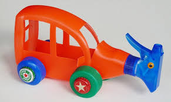
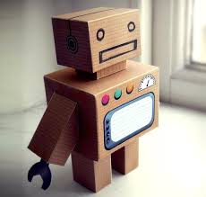
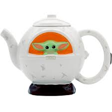
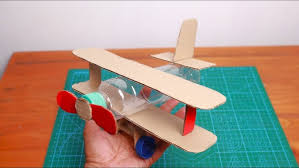
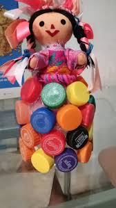

Portafolio de Juguetes Reciclados
Explora algunos de nuestros juguetes reciclados más creativos y ecológicos:
| Imagen | Nombre | Descripción |
|---|---|---|
|  | Carro de Botellass | Carro hecho a partir de botellas reciclados. Resistente y creativo, ideal para niños pequeños y fácil de personalizar. |
|  | Robot de Cartón | Figura de robot construida con cajas de cartón. Un proyecto divertido y ecológico para armar en familia. |
|  | Nave Tetera | Nave espacial hecha con una tetera y piezas reutilizadas. Estimula la imaginación de los niños y da nueva vida a objetos. |
|  | Avión de Botella | Avión construido con botellas de plástico y ruedas de tapas. Reciclaje creativo para los amantes de la aviación. |
|  | Muñeca de Fieltro | Muñeca hecha de retazos de fieltro reciclado. Suave y segura para los niños, con detalles coloridos. |